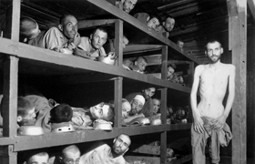

Lezione 19  La seconda guerrra mondiale
La seconda guerrra mondiale

La Seconda guerra mondiale ha conosciuto l’estremo abominio dei campi di sterminio organizzati dai nazisti in primo luogo contro gli ebrei, ma anche contro gli omosessuali, gli oppositori politici, ed etnie considerate “inferiori” come i rom. Si calcola che nel solo campo di Treblinka, descritto dallo scrittore e corrispondente di guerra Vasilij Grossman nel libro Anni di guerra, durante i tredici mesi di funzionamento, siano stati eliminati, passati per le camere a gas, tre milioni di persone. Ecco il testo:
«L’uomo era stato privato dalla bestia di tutto ciò di cui godeva in virtù della sacra legge della vita: all’inizio gli era stata tolta la libertà, poi la casa, poi la patria, per condurlo infine in anonimi luoghi deserti. Aveva appena poggiato il piede sulla banchina della stazione che gli toglievano i bagagli, le lettere, le fotografie dei suoi cari. Al di là del recinto del campo, gli prendevano la madre, la moglie, il figlio. Poi quando era nudo, gettavano i suoi documenti nel fuoco: cancellavano il suo nome. Infine lo spingevano in un corridoio dal soffitto basso e pesante: gli toglievano il cielo, le stelle, il vento, il sole.
Ecco, dunque, l’ultimo atto dell’orribile tragedia: l’uomo entrava nell’ultimo girone dell’inferno di Treblinka. E la porta si richiudeva su di lui. La porta dal massiccio catenaccio e dai solidi cardini. La porta che era impossibile sfondare.
Avremo la forza di immaginare quello che provavano, in quegli ultimi istanti, coloro che si trovavano lì dentro? […] No, non è possibile immaginare quel che avveniva nella camera. […] In capo a venti-venticinque minuti, gli accoliti di Schmidt davano un’occhiata dallo spioncino. Era giunto il momento di aprire le porte che davano sulla banchina. Alcuni detenuti in tuta, tallonati dalle SS, procedevano alla “pulizia”. Siccome il pavimento inclinava verso la banchina, molti cadaveri vi rotolavano da soli. […] Alcune SS, sempre chiacchierando, esaminavano i cadaveri. Se qualcuno era ancora vivo, gemeva o si muoveva, lo finivano con un colpo di pistola. Poi delle squadre armate di pinze da dentista strappavano ai morti i denti d’oro o di platino. Questi venivano imballati e spediti in Germania. […] I corpi erano poi caricati su carrelli e trasportati verso immense fosse. Lì erano deposti a ranghi serrati. E la fossa rimaneva aperta, aspettava…
Mentre si sgomberavano i cadaveri, lo Scharfuehrer del servizio trasporti riceveva per telefono un ordine secco. Dava un segnale col fischietto – il segnale al macchinista – e un nuovo convoglio di venti vagoni avanzava lentamente verso la banchina dove s’innalzava il cartello della stazione Ober-majdan.
Tre o quattromila uomini scendevano sulla banchina portando valigie, bauli, pacchetti di cibo. Le madri avevano i lattanti in braccio. I bambini si stringevano ai loro genitori e gettavano intorno sguardi incuriositi. Questo piazzale calpestato da migliaia di piedi aveva un che di inquietante, di tragico. Perché, oltre la banchina, la linea ferroviaria s’interrompeva di colpo? Perché questa erba gialla e questi reticolati alti tre metri?
Tutto era calcolato affinché quegli sventurati s’incamminassero sulla “strada da cui non vi è ritorno” proprio nel momento in cui gli ultimi cadaveri, estratti dalle camere a gas, rotolavano verso la fossa che restava aperta e aspettava».